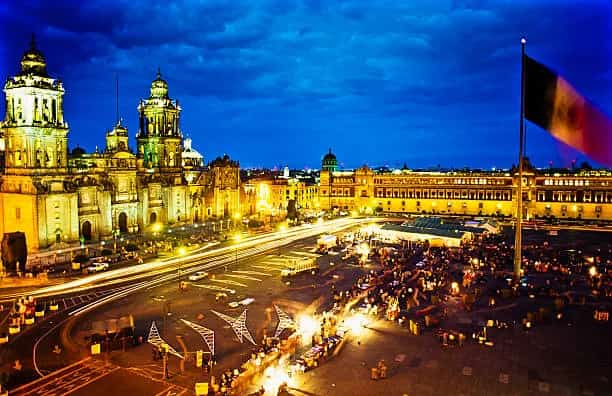

Mexico City is my favorite city. It is the capital of Mexico and one of the largest metropolitan areas in the world, blending history, culture, and modernity in a truly unique way. At the heart of its historic center lies the Zócalo, one of the largest public squares in the world, surrounded by the Metropolitan Cathedral and the National Palace.
Beyond its rich history, the city offers exceptional cuisine, world-class museums such as the National Museum of Anthropology, and green spaces like Chapultepec Park. It's a vibrant city that combines Aztec tradition, colonial heritage, and contemporary life.
